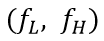
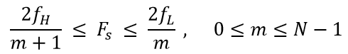
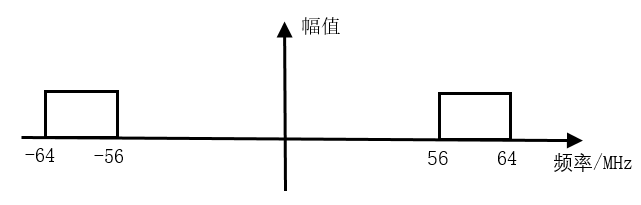
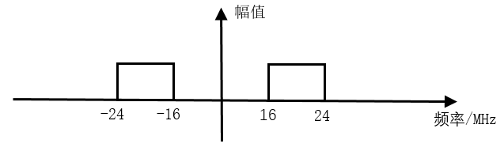
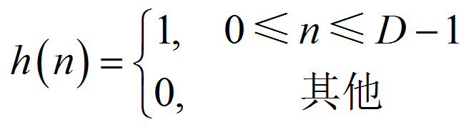
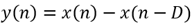
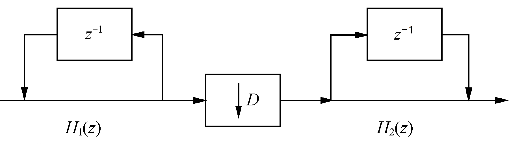

The cascaded integrator-comb filter (CIC, Cascaded Integrator Comb) is generally used in digital down-conversion (DDC) and digital up-conversion (DUC) systems. The CIC filter has a simple structure, with no multipliers, only adders, integrators, and registers. It consumes few resources and has a high operation rate, enabling high-speed filtering. It is often used in the first stage with the highest input sampling rate and is widely applied in multi-rate signal processing systems.
DDC Principle
DDC Working Principle
DDC mainly consists of a numerically controlled oscillator (NCO), a mixer, filters, and so on, as shown in the following figure.

DDC mixes the intermediate frequency signal with the carrier signal generated by the oscillator, shifting the center frequency of the signal. After decimation and filtering, the original signal is recovered, realizing the down-conversion function.
When sampling IF data, a very high sampling frequency is required to ensure the signal-to-noise ratio of the signal acquired by the ADC (Analog-to-Digital Converter). After digital down-conversion, the sampling frequency of the resulting baseband signal is still the ADC sampling frequency, so the data rate is very high. At this time, the effective bandwidth of the baseband signal is often already much smaller than the sampling frequency. Therefore, using decimation and filtering to convert the data rate, reduce the sampling rate, and avoid waste of resources and design difficulties becomes an indispensable part of DDC.
Using a CIC filter for data processing is the most common method in the decimation and filtering part of DDC.
Bandpass Sampling Theorem
In a DDC system, the input IF carrier signal is frequency-shifted according to the carrier frequency to obtain a bandpass signal. If the Nyquist sampling theorem is still used at this time, that is, the sampling frequency is twice the highest frequency of the bandpass signal, then the required sampling frequency will be very high and the design will become complicated. In this case, the sampling frequency can be determined according to the bandpass sampling theorem.
A continuous bandpass signal band-limited to

with a bandwidth of Let
Let , where N is the largest positive integer not greater than
, where N is the largest positive integer not greater than and if the sampling frequency satisfies the condition:
and if the sampling frequency satisfies the condition:

Then the signal can be reconstructed without distortion from its sampled values.
When m=1, the bandpass sampling theorem becomes the Nyquist sampling theorem.
Another description of the bandpass sampling theorem is: if the highest frequency of the signal is an integer multiple of the signal bandwidth, the sampling frequency only needs to be greater than twice the signal bandwidth, and no spectral aliasing will occur.
Therefore, half the sampling frequency can be considered the cutoff frequency of the CIC filter.
DDC Spectrum Shifting
For example, a bandpass signal has a center frequency of 60 MHz and a bandwidth of 8 MHz, so the frequency range is 56 MHz ~ 64 MHz, and the possible value range of m is 0 ~ 7. Taking m=1, the sampling frequency range is 64 MHz ~ 112 MHz.
Taking the sampling frequency as 80 MHz and setting the NCO center frequency to 20 MHz, the following discusses the spectrum shifting diagram of the complex signal.
(1) Considering the symmetry of the spectrum, the spectrum diagram of the input complex signal is as follows:

(2) After sampling at an 80 MHz sampling frequency, the 56~64 MHz band is shifted to the bands of -24~-16 MHz and 136~144 MHz (filtered out because higher than the sampling frequency); the -64~-56 MHz band is shifted to the bands of -144~-136 MHz (filtered out because higher than the sampling frequency) and 16~24 MHz.
The frequency band distribution after sampling is as follows:

(3) After the signal passes through the quadrature circuit of the 20 MHz NCO, the -24~-16 MHz band is shifted to the -4~4 MHz and -44~-36 MHz bands, and the 16~24 MHz band is shifted to the -4~4 MHz and 36~44 MHz bands, as shown below.

(4) At this time, the IF input signal has been shifted to the zero-IF baseband.
The band signals at -44~-36 MHz and 36~44 MHz are not needed and can be filtered out. The zero-IF signal at -4~4 MHz still has a data rate of 80 MHz, so decimation can be performed to reduce the data rate. CIC filtering is exactly to accomplish this process.
The above has reviewed a lot of digital signal processing content, serving as a brick thrown to attract jade—using DDC as a lead-in to CIC.
CIC Filter Principle
Single-Stage CIC Filter
Let the decimation factor of the filter be D, then the impulse response of the single-stage filter is:

Performing the z-transform on it, the system function of the single-stage CIC filter can be obtained as:

令

It can be seen that the single-stage CIC filter consists of two basic parts: the integrator part and the comb part. The structure diagram is as follows:

Integrator
The integrator is a single-pole IIR (Infinite Impulse Response) filter with a feedback coefficient of 1. Its state equation and system function are respectively:


Comb Filter
The comb filter is an FIR filter, and its state equation and system function are respectively:


Decimator
After the integrator, there is also a decimator, whose decimation factor is consistent with the delay parameter of the comb filter. By using the properties of the z-transform to perform an equivalent transformation and moving the decimator between the integrator and the comb filter, the single-stage CIC filter structure can be obtained, as shown below.

Parameter Description
Before the structure transformation of the CIC filter, the parameter D can be understood as the delay or order of the comb filter; after the transformation, the meaning of D becomes the decimation factor, while the delay of the comb filter is 1, that is, the order is 1.
Many scholars introduce a variable M to represent the delay of each stage of the comb filter. In this case, the delay of the comb section is no longer 1. Then the system function of the comb filter becomes:

In fact, it is acceptable to understand DM as a whole as the single-stage filter delay or as the decimation factor. The implementation method or structure may be different, but the final results are the same. In this design, the single-stage filter delays are all M=1, that is, the decimation factor and the filter delay are the same.
Multi-Stage CIC Filter
The stopband attenuation of a single-stage CIC filter is poor. In order to improve the filtering effect, a multi-stage CIC filter cascade structure is often used in decimation filtering.
Implementing a multi-stage directly cascaded CIC filter is not optimal in terms of design and resources, so its structure needs to be adjusted. As shown below, the integrators and comb filters are moved into separate groups, and the decimator is moved before the comb filters. Decimating first and then filtering can reduce the length of data processing and save hardware resources.

Of course, the larger the number of cascaded stages, the better the sidelobe suppression, but the flatness in the passband will also become worse. Therefore, the number of cascaded stages should not be too many; generally at most 5 stages.
CIC Filter Design
Design Description
The CIC filter is essentially a simple low-pass filter whose cutoff frequency is half of the sampling frequency divided by the decimation factor. The input data signal is still 7.5 MHz and 250 kHz, with a sampling frequency of 50 MHz. The decimation factor is set to 5, so the cutoff frequency is 5 MHz, which is less than 7.5 MHz, so the 7.5 MHz frequency component can be filtered out. The design parameters are as follows:
输入频率： 7.5MHz 和 250KHz 采样频率： 50MHz 阻带： 5MHz 阶数： 1（M=1） 级数： 3（N=3）
Regarding the bit width of the intermediate data signal during integration, many sources give different calculation methods, and the calculation results are quite different. Here we summarize the most commonly used calculation method:

Among them, D is the decimation factor, M is the filter order, and N is the number of filter stages. The decimation factor is 5, the filter order is 1, and the number of cascaded filter stages is 3. Taking the input signal data bit width as 12 bits, and rounding up the logarithmic part, the intermediate signal bit width after integration that prevents data overflow is 21 bits.
For a design with more margin, if the filter order is understood as the direct-form structure of the multi-stage CIC filter before structure transformation, the filter order can be considered as 5, and the maximum intermediate signal bit width is 27 bits.
Integrator Design
Under the control of the input data valid signal, the integrator simply performs accumulation. Pay attention to the data bit width.
Example
module integrator
#(parameter NIN = 12,
parameter NOUT = 21)
(
input clk ,
input rstn ,
input en ,
input [NIN-1:0] din ,
output valid ,
output [NOUT-1:0] dout) ;
reg [NOUT-1:0] int_d0 ;
reg [NOUT-1:0] int_d1 ;
reg [NOUT-1:0] int_d2 ;
wire [NOUT-1:0] sxtx = {{(NOUT-NIN){1'b0}}, din} ;
//data input enable delay
reg [2:0] en_r ;
always @(posedge clk or negedge rstn) begin
if (!rstn) begin
en_r <= 'b0 ;
end
else begin
en_r <= {en_r[1:0], en};
end
end
//integrator
//stage1
always @(posedge clk or negedge rstn) begin
if (!rstn) begin
int_d0 <= 'b0 ;
end
else if (en) begin
int_d0 <= int_d0 + sxtx ;
end
end
//stage2
always @(posedge clk or negedge rstn) begin
if (!rstn) begin
int_d1 <= 'b0 ;
end
else if (en_r[0]) begin
int_d1 <= int_d1 + int_d0 ;
end
end
//stage3
always @(posedge clk or negedge rstn) begin
if (!rstn) begin
int_d2 <= 'b0 ;
end
else if (en_r[1]) begin
int_d2 <= int_d2 + int_d1 ;
end
end
assign dout = int_d2 ;
assign valid = en_r[2];
endmodule
Decimator Design
When designing the decimator, count the integrator output data and then take one sample every 5 samples as decimation.
Example
#(parameter NDEC = 21)
(
input clk,
input rstn,
input en,
input [NDEC-1:0] din,
output valid,
output [NDEC-1:0] dout);
reg valid_r ;
reg [2:0] cnt ;
reg [NDEC-1:0] dout_r ;
//counter
always @(posedge clk or negedge rstn) begin
if (!rstn) begin
cnt <= 3'b0;
end
else if (en) begin
if (cnt==4) begin
cnt <= 'b0 ;
end
else begin
cnt <= cnt + 1'b1 ;
end
end
end
//data, valid
always @(posedge clk or negedge rstn) begin
if (!rstn) begin
valid_r <= 1'b0 ;
dout_r <= 'b0 ;
end
else if (en) begin
if (cnt==4) begin
valid_r <= 1'b1 ;
dout_r <= din;
end
else begin
valid_r <= 1'b0 ;
end
end
end
assign dout = dout_r ;
assign valid = valid_r ;
endmodule
Comb Filter Design
The comb filter is simply a first-order FIR filter. Each stage of the FIR filter delays the data by one clock cycle and then performs subtraction. Since the coefficients are ±1, no multiplier is needed.
Example
#(parameter NIN = 21,
parameter NOUT = 17)
(
input clk,
input rstn,
input en,
input [NIN-1:0] din,
input valid,
output [NOUT-1:0] dout);
//en delay
reg [5:0] en_r ;
always @(posedge clk or negedge rstn) begin
if (!rstn) begin
en_r <= 'b0 ;
end
else if (en) begin
en_r <= {en_r[5:0], en} ;
end
end
reg [NOUT-1:0] d1, d1_d, d2, d2_d, d3, d3_d ;
//stage 1, as fir filter, shift and add(sub),
//no need for multiplier
always @(posedge clk or negedge rstn) begin
if (!rstn) d1 <= 'b0 ;
else if (en) d1 <= din ;
end
always @(posedge clk or negedge rstn) begin
if (!rstn) d1_d <= 'b0 ;
else if (en) d1_d <= d1 ;
end
wire [NOUT-1:0] s1_out = d1 - d1_d ;
//stage 2
always @(posedge clk or negedge rstn) begin
if (!rstn) d2 <= 'b0 ;
else if (en) d2 <= s1_out ;
end
always @(posedge clk or negedge rstn) begin
if (!rstn) d2_d <= 'b0 ;
else if (en) d2_d <= d2 ;
end
wire [NOUT-1:0] s2_out = d2 - d2_d ;
//stage 3
always @(posedge clk or negedge rstn) begin
if (!rstn) d3 <= 'b0 ;
else if (en) d3 <= s2_out ;
end
always @(posedge clk or negedge rstn) begin
if (!rstn) d3_d <= 'b0 ;
else if (en) d3_d <= d3 ;
end
wire [NOUT-1:0] s3_out = d3 - d3_d ;
//tap the output data for better display
reg [NOUT-1:0] dout_r ;
reg valid_r ;
always @(posedge clk or negedge rstn) begin
if (!rstn) begin
dout_r <= 'b0 ;
valid_r <= 'b0 ;
end
else if (en) begin
dout_r <= s3_out ;
valid_r <= 1'b1 ;
end
else begin
valid_r <= 1'b0 ;
end
end
assign dout = dout_r ;
assign valid = valid_r ;
endmodule
Top-Level Instantiation
Instantiate the integrator, decimator, and comb filter separately according to the signal flow direction to form the final CIC filter module.
The final output bit width of the comb filter is generally somewhat smaller than the input signal. Here it is taken as 17 bits. Of course, the output bit width can be exactly the same as the input data bit width.
Example
#(parameter NIN = 12,
parameter NMAX = 21,
parameter NOUT = 17)
(
input clk,
input rstn,
input en,
input [NIN-1:0] din,
input valid,
output [NOUT-1:0] dout);
wire [NMAX-1:0] itg_out ;
wire [NMAX-1:0] dec_out ;
wire [1:0] en_r ;
integrator #(.NIN(NIN), .NOUT(NMAX))
u_integrator (
.clk (clk),
.rstn (rstn),
.en (en),
.din (din),
.valid (en_r[0]),
.dout (itg_out));
decimation #(.NDEC(NMAX))
u_decimator (
.clk (clk),
.rstn (rstn),
.en (en_r[0]),
.din (itg_out),
.dout (dec_out),
.valid (en_r[1]));
comb #(.NIN(NMAX), .NOUT(NOUT))
u_comb (
.clk (clk),
.rstn (rstn),
.en (en_r[1]),
.din (dec_out),
.valid (valid),
.dout (dout));
endmodule
testbench
The testbench is written as follows. Its main function is to continuously input the mixed signal data of 250 kHz and 7.5 MHz sine waves. The input mixed signal data can also be generated by MATLAB. For the specific process, refer to"Parallel FIR Filter Design"section.
Example
parameter NIN = 12 ;
parameter NMAX = 21 ;
parameter NOUT = NMAX ;
reg clk ;
reg rstn ;
reg en ;
reg [NIN-1:0] din ;
wire valid ;
wire [NOUT-1:0] dout ;
//=====================================
// 50MHz clk generating
localparam T50M_HALF = 10000;
initial begin
clk = 1'b0 ;
forever begin
# T50M_HALF clk = ~clk ;
end
end
//============================
// reset and finish
initial begin
rstn = 1'b0 ;
# 30 ;
rstn = 1'b1 ;
# (T50M_HALF * 2 * 2000) ;
$finish ;
end
//=======================================
// read cos data into register
parameter SIN_DATA_NUM = 200 ;
reg [NIN-1:0] stimulus [0: SIN_DATA_NUM-1] ;
integer i ;
initial begin
$readmemh("../tb/cosx0p25m7p5m12bit.txt", stimulus) ;
i = 0 ;
en = 0 ;
din = 0 ;
# 200 ;
forever begin
@(negedge clk) begin
en = 1 ;
din = stimulus[i] ;
if (i == SIN_DATA_NUM-1) begin
i = 0 ;
end
else begin
i = i + 1 ;
end
end
end
end
cic #(.NIN(NIN), .NMAX(NMAX), .NOUT(NOUT))
u_cic (
.clk (clk),
.rstn (rstn),
.en (en),
.din (din),
.valid (valid),
.dout (dout));
endmodule // test
Simulation Results
From the simulation results in the figure below, it can be seen that after the CIC filter, the signal has only one low-frequency component (250 kHz), and the high-frequency signal (7.5 MHz) has been filtered out.
However, the waveform is not very perfect, which is related to factors such as the designed cutoff frequency and the fact that the data is not continuously output.
At this point, it is found that the data signal output by the integrator is also very irregular, which is related to its bit width.

In order to better observe the data output by the integrator, its bit width is changed from 21 bits to 34 bits. The simulation results are as follows.
At this point, it is found that the data output of the CIC filter has not changed substantially, but the data signal output by the integrator presents a sawtooth shape, also called comb shape. This is also the origin of the name "comb filter".

Click me to share notes
<p style="font-size:14px;">Notes must be an extension of the content of this article!</p><br> <p style="font-size:12px;"><a href="../tougao.html" target="_blank">Article submission, click here</a></p> <p style="font-size:14px;"><a href="./runoob-user-test-intro.html" target="_blank">How to get registration invitation code</a></p> <h3 class="text-muted"><i class="fa fa-info-circle" aria-hidden="true"></i> You must <a href=".." class="runoob-pop">log in</a> before sharing notes!</h3> <p><a href="./runoob-user-test-intro.html" target="_blank">How to get registration invitation code</a></p>